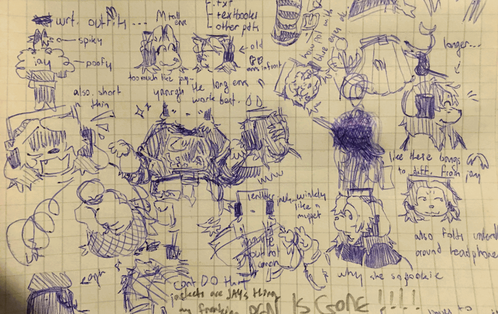
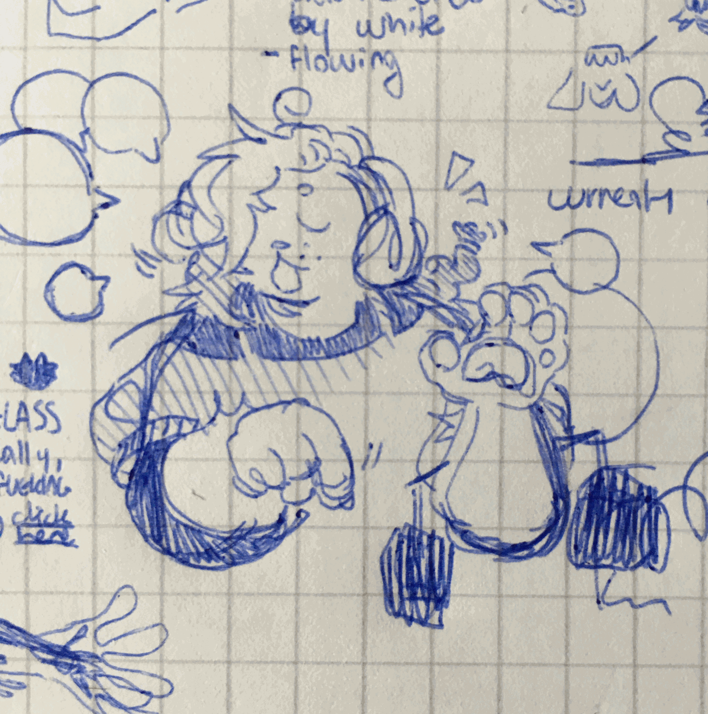
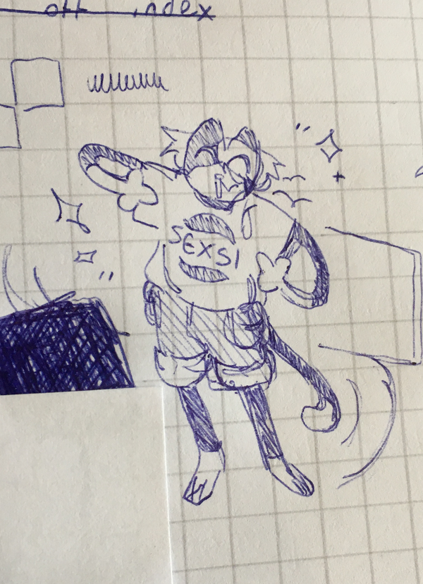

welcome to the new cat comic blog! if you're reading this on tumblr, hello! if you're reading this on neocities, i love you more. page looks pretty snazzy, right? check out the very pretty melankorin.net, this page looked a lot more plain before i ate that page's design aesthetic.
ok.
it just so happens that yesterday, the 13th of april, 2024, was cat comic's first birthday. this comic is officially one year old! goo goo ga ga! it makes me glad and more than little scared that i've been working on this for so long. it's my longest-lived project to date and still going strong, which means a lot coming from my bloody trail of abandoned projects.
i suppose now is the time one would give a "status update" on how the comic's going. status update: the foundation is in. i have a solid idea of what this story is about, a solid idea of how i'm telling it, a solid idea of the cast, a solid idea of the world, a solid idea of... a lot of things.

cat comic is a story born out of a lot of my fears vis-a-vis my creative projects. it's a story about creation, whether that deals with art, identity, or culture, and about the history that doggedly stamps itself on any creation, and about the problems of indie projects. it's a story about a cat and a dog and some other various animals who get into lots of trouble, and it's mainly a story about the end of the world.
i think you can tell that there's a lot of throughlines to my other work (unfinished or otherwise), which is pretty thematically appropriate. actually, cat comic was originally reusing far too much of eyrie, an old comic idea of mine. eyrie followed an aspiring paladin and their little buddy as they made their way to the shining capital of a theocratic nation, delving into a mirror world that reflected public perception of things along the way. it was a pretty fun concept.
anyway, it informed a lot of cat comic's original premise—it began with an ascent from belowcloud to a shining city in the sky. huh... sounds familiar. like eyrie, it also dealt a lot with divinity, mirrors, and perfection (as in: perfection in the eyes of society, not cat comic's current sense of it). it's fun looking back at these early drafts of cat comic because you can clearly see all the influences i was pulling on, big or small. i was pretty fine with doing this because, as it pains me to remember, cat comic was to be a "fun" and "short" project where i could "do whatever". haha.
cat comic's changed a lot since then and it's also hardly changed at all. a lot of the original ideas are still there in the batter, but it's also evolved into something pretty different and much closer to my heart. and it will continue to change and evolve! although perhaps not quite so drastically as it has over the last year.

i had a conversation with a friend a while ago (hiii ardenna i know you're reading this. love you) about our respective story projects and our problems working on them as single creators. i don't have a team for art or writing—it's all me, babey—and that means everything about this project is going to take what we in the industry call a "long time".
this time next year, i want to have a comprehensive plot. that might sound like a lot of time for not a lot of work but believe me i need it—i'm doing a bit of a unique format for this story and i want to put the time in to make sure i stick the landing with it. my secondary goals for the next year also include finalizing designs for all of the main cast and making sure they're all fleshed out... basically, by next year, i want to be able to start actually drawing the comic. i don't want to start drawing it then but, just, you know, be able to.
as of last week, i've handed in my senior project (and passed with flying colors, thank you), which means i can start turning my attention to things other than that. i've already talked a bit in my 2024 blog post about my plans for the year and how i would like to devote the rest of the spring to exercising my comic muscles. i would like to stick to this plan, despite the fact that school is trying to murder me.
right now, i only have vague ideas of what those exercises will be. once i'm completely done with my senior project (report handed in at the end of this month) i'll start workshopping them. again, my priority with them is not telling a story so much as working on coloring, panelling and figuring out my workflow.
and, apart from my year-long goals and season-long goals, i just want to flesh out these pages a little more. i kind of rushed getting these up because i wanted to hit the birthday (and i didn't even manage that LOL). i want to get some more of my brain bits out on canvas! but they never tell you how hard it is to figure out how much you want to share and how much you want to keep to yourself for now. i'm making little lists and i think i'm doing a pretty good job.

thanks to my friends (hi again) who are very excited about my comic. it means an immeasurable amount. friendship forever
and to everyone else... remember: birds can't fly with wet wings. goodbye for now!